|
พระพุทธรูปประจำปีเกิด
นำเสนอโดย...พระมหาบุญโฮม ปริปุณฺณสีโล (ไชยฤทธิ์) วัดท่าไทร จ.สุราษฎร์ธานี |
|
โดยแท้ที่จริงแล้ว คนเราจะเกิดในวัน เดือน และปีใดก็สามารถที่จะทำการสักการะบูชาพระพุทธรูปทุกปาง
ทุกขนาด แล้วเกิดสิริมงคล เป็นบุญกุศล และมีสวรรค์เป็นที่ไปในเบื้องหน้า
แต่ที่นำมาเสนอในที่นี้ เพื่อเป็นข้อมูล เชิงเปรียบเทียบกับเหตุการณ์ที่เกิดขึ้นในเดือนต่าง
ๆ เพื่อให้ได้รับทราบว่า นอกจากจะมีพระพุทธรูปประจำวันเกิดแล้ว ยังพระพุทธรูปประจำเดือน
และประจำปีเกิดด้วย ดังนั้น จึงขอนำเรื่องนี้มาเสนอ เพื่อเป็นข้อมูลแก่ท่านที่สนใจ
พระพุทธรูปอยู่ในพระอิริยาบทประทับ (นั่ง) ขัดสมาธิ พระหัตถ์ซ้ายอยู่บนพระเพลา (ตัก) พระหัตถ์ขวายกขึ้นเสมอพระอุระ (อก) จีบนิ้วพระหัตถ์ เป็นกิริยาทรงแสดงธรรม เป็นลักษณะเดียวกับปางปฐมเทศนา บางแบบพระหัตถ์ซ้ายวางบนพระชานุ (เข่า) ครั้งหนึ่งเจ้าผู้ครองนครอาฬวี
ชอบล่าสัตว์เป็นกิจวัตร วันหนึ่งพลัดหลงเข้าไปพักใต้ต้นไทรซึ่งเป็นเขตหวงห้ามของอาฬวกยักษ์
ถูกยักษ์จับไว้เพื่อกินเป็นอาหาร จึงขอให้ปล่อยตัวกลับและสัญญาจะส่งคนมาให้กินวันละหนึ่งคน
เมื่อนักโทษหมดก็ส่งเด็กให้วันละคน ต่อมาพระสัมมาสัมพุทธเจ้าทรงทราบด้วยพระญาณ
จึงได้เสด็จไปยังที่อยู่ของอาฬวกยักษ์ แล้วแสดงธรรมโปรดจนอาฬวกยักษ์ได้ดวงตาเห็นธรรม
เป็นพระโสดาบัน
|
|
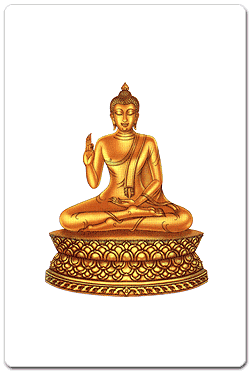พระประจำปีฉลู
หลังจากที่พระสัมมาสัมพุทธเจ้าทรงแสดงยมกปาฏิหาริย์แล้ว ได้เสด็จขึ้นไปจำพรรษาบนสวรรค์ชั้นดาวดึงส์เป็นเวลา ๓ เดือน เพื่อแสดงพระธรรมเทศนาอภิธรรม โปรดพุทธมารดา ซึ่งไปบังเกิดเป็นเทพบุตร ณ สวรรค์ชั้นดุสิต เพื่อตอบแทนพระคุณ ท้าวสักกเทวราช ทรงมีความปิติยินดี รีบป่าวประกาศแก่เทวดาทั้งหลายให้มาฟังพระธรรมเทศนา ในที่สุดพุทธมารดาได้ดวงตาเห็นธรรมบรรลุเป็นพระโสดาบัน
หลังจากออพรรษา พระพุทธเจ้าจึงเสด็จลงจากสวรรค์ โดยเสด็จลงที่ใกล้ประตูเมืองสังกัสสะ ประชาชนที่เฝ้ารออยู่ได้พบเห็น ต่างก็มีความปลื้มปิติ จึงจัดอาหารใส่บาตรทั้งของพระพุทธเจ้าและพระสงฆ์ที่มารอรับเสด็จอยู่ จึงเกิดมีประเพณีตักบาตรเทโวโรหณะกันจนกระทั่งทุกวันนี้ |
|
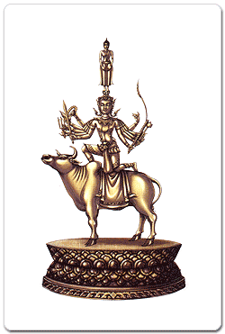พระประจำปีขาล พระพุทธรูปอยู่ในพระอิริยาบทยืน บนเศียรพกาพรหมซึ่งประทับหลังโคอุสุภราช พระหัตถ์ทั้งสองวางบนพระเพลา (ตัก) บางแบบพระหัตถ์ประสานกันอยู่บนพระเพลา (ตัก) พระหัตถ์ขวาทับพระหัตถ์ซ้าย ทอดพระเนตรลงเบื้องต่ำอยู่ในอาการสังวร ท้าวพกาพรหมมีความเห็นว่าสิ่งทั้งหลายเป็นของเที่ยงแท้ไม่แปรผัน
ซึ่งขัดต่อคำสอนของพระสัมมาสัมพุทธเจ้า ที่ว่าสรรพสิ่งย่อมไม่เที่ยง
เป็นไตรลักษณ์ คือ อนิจจัง ทุกขัง อนัตตา พระพุทธองค์โปรดให้ท้าวพกาพรหมแสดงฤทธิ์โดยให้ไปซ่อนตัว
แต่ไปซ่อนที่ใด พระพุทธองค์ก็ทรงทราบ ต่อมาพระพุทธองค์ทรงทำปาฏิหาริย์อันตรธารหายไป
และทรงแสดงพระธรรมเทศนาให้ได้ยินแต่พระสุรเสียง และทรงตรัสว่ากำลังเดินจงกรมอยู่บนเศียรของท้าพกาพรหม
ท้าวพกาพรหมหมดทิฐิมานะ จึงตั้งใจฟังธรรมเทศนาจนได้บรรลุโสดาปัตติผลเป็นพระโสดาบัน
|
|
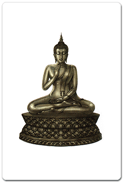พระประจำปีเถาะ พระพุทธรูปอยู่ในพระอิริยาบทประทับ (นั่ง) ขัดสมาธิ พระหัตถ์ซ้ายวางหงายบนพระเพลา (ตัก) พระหัตถ์ขวายกขึ้นวางบนพระอุระ (อก) เบนฝ่าพระหัตถ์ไปทางซ้าย (บางตำราใช้ปางปัจจเวกขณะเป็นพระประจำปีเถาะ) เมื่อเจ้าชายสิทธัตถะเสด็จออกพ้นเขตกรุงกบิลพัสดุ์จนมาถึงฝั่งแม่น้ำอโนมา จึงเสด็จลงจากหลังม้า ประทับเหนือหาดทรายริมฝั่งแม่น้ำ รับสั่งแก่นายฉันนะว่า พระองคักบรรพชาถือเพศเป็นบรรพชิต ณ ที่นี้ ให้นำเครื่องประดับและม้ากัณฐกะกลับพระนคร เจ้าชายสิทธัตถะทรงตั้งพระทัยว่า เมื่อได้ตรัสรู้เป็นพระสัมมาสัมพุทธเจ้าแล้ว จะเสด็จกลับมาเทศนาโปรดพระประยูรญาติ
|
|
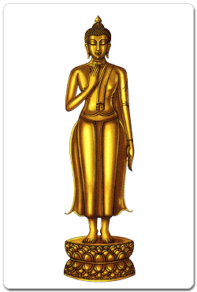พระประจำปีมะโรง พระพุทธรูปอยู่ในพระอิริยาบทยืน พระหัตถ์ซ้ายห้อยลงข้างพระวรกาย พระหัตถ์ขวายกขึ้นเสมอพระอุระ (อก) นิ้วพระหัตถ์ตั้งตรง หันฝ่าพระหัตถ์ไปทางซ้าย อหิงสกกุมารบุตรพราหมณ์ปุโรหิตแห่งสาวัตถี ได้ศึกษาสรรพวิชาอยู่ ณ สำนักทิศาปาโมกข์ เมืองตักศิลา ผู้เป็นอาจารย์ถูกยุยงว่า อหิงสกะหมายล้มล้างตน จึงหาทางกำจัดโดยยืมมือผู้อื่นฆ่า และบอกว่าจะสอน "วิษณุมนต์" ให้ แต่มีข้อแม้ว่าจะต้องหานิ้วมือมนุษย์จำนวนหนึ่งพันนิ้วจากหนึ่งพันคนมาบูชาครู พระสัมมาสัมพุทธเจ้าทรงทราบด้วยพระอนาคตังสญาณว่า อหิงสกะ หรือ องคุลีมาลโจรหรือจอมโจรผู้มีนิ้วมือเป็นมาลัย กำลังจะทำกรรมหนัก เพราะกำลังจะฆ่ามารดา จึงเสด็จไปขวางทาง องคุลีมาลโจรตะโกนว่า "หยุดก่อนสมณะ" พระพุทธองค์ทรงรับสั่งว่า "เราหยุดแล้ว แต่ท่านนั่นแหละยังไม่หยุด"
พระพุทธองค์ได้ทรงแสดงธรรมจนองคุลีมาลทูลขอบรรพชา พระพุทธองค์จึงทรงประทานการบวชให้ด้วยเอหิภิกขุอุปสัมปทา
ท่านพระองคุลีมาล เมื่อบวชแล้วท่านได้ปฏิบัติธรรมจนกระทั่งบรรลุธรรมเป็นพระอรหัต์ในกาลต่อมา
|
|
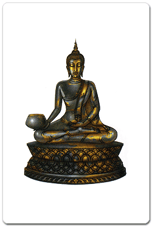พระประจำปีมะเส็ง พระพุทธรูปอยู่ในพระอิริยาบทประทับ (นั่ง) ขัดสมาธิ พระหัตถ์ซ้ายวางหงายบนพระเพลา (ตัก) พระหัตถ์ขวาทรงบาตรวางบนพระชานุ (เข่า) เป็นกิริยายื่นบาตรออกรับอุทกัง คือ รับน้ำ เมื่อครั้งที่พระสัมมาสัมพุทธเจ้าประทับที่สวนมะม่วงของนายจุนทะ นายจุนทะได้จัดภัตราหารอันประณีตไว้ถวายพร้อมสุกรมัททวะ หลังจากที่เสวยภัตตาหารของนายจุนทะแล้ว พระพุทธองค์ ก็ทรงพระประชวรโรคโลหิตปักขัณทิกาพาธ แต่ก็เสด็จไปยังเมืองกุสินารา ระหว่างทาง ทรงกระหายน้ำเป็นกำลัง จึงรับสั่งให้พระอานนท์นำน้ำมาถวาย พระอานนท์กราบทูลว่า มีเกวียน ๕๐๐ เล่มเพิ่มข้ามแม่น้ำไป ทำให้น้ำขุ่นไม่ควรเสวย และเชิญเสด็จไปยังแม่น้ำอีกสายที่อยู่ใกล้ๆ แต่ทรงรับสั่งให้พระอานนท์ไปนน้ำมา พระอานนท์ทูลทัดทานถึง ๒ ครั้ง ครั้งที่ ๓ จึงทำตามพระบัญชา เมื่อพระอานนท์นำบาตรไปตักน้ำมาถวาย น้ำกลับใสสะอาดไม่ขุ่นมัวเป็นอัศจรรย์ พระพุทธองค์จึงเสวยน้ำนั้น
|
|
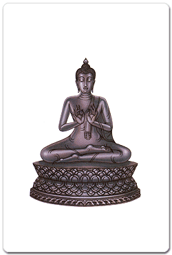พระประจำปีมะเมีย พระพุทธรูปอยู่ในพระอิริยาบทประทับ (นั่ง) ขัดสมาธิ พระหัตถ์ทั้งสองยกขึ้นเสมอพระอุระ (อก) พระหัตถ์ซ้ายอยู่ในอิริยาบถจับเข็ม พระหัตถ์ขวาจับเส้นด้ายเป็นกิริยาสนเข็ม ครั้งหนึ่งพระจีวรของพระอนุรุทธเถระเก่ามาก
ท่านจึงแสวงหาผ้าบังสุกุลเพื่อมาทำจีวร พระเถระพบผ้า ๓ ผืนที่กองหยากเยื่อจึงเก็บมา
ในสมัยโบราณการทำจีวรต้องตัดเย็บและย้อมเอง พระสงฆ์ทั้งหลายจึงมาช่วยกันอย่างพร้อมเพรียง
แบ่งหน้าที่กันทำตามความเหมาะสม พระสัมมาสัมพุทธเจ้าทรงช่วยร้อยด้ายเข้าในบ่วงเข็ม
( สนเข็ม ) เมื่อพระรูปใดด้ายหมดก็ส่งเข็มถวาย พระพุทธองค์ก็ทรงสนเข็มประทาน
จนการเย็บจีวรสำเร็จเรียบร้อยด้วยดี
|
|
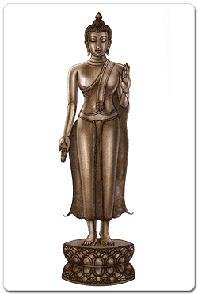พระประจำปีมะแม พระพุทธรูปอยู่ในพระอิริยาบทยืน ยกพระหัตถ์ซ้ายขึ้นเสมอพระอุระ (อก) แบฝ่าพระหัตถ์ออกไปข้างหน้า พระหัตถ์ขวาห้อยลง แบฝ่าพระหัตถ์ออกไปข้างหน้า บางแบบยกพระหัตถ์ขวาขึ้น ห้อยพระหัตถ์ซ้ายลง มหาอุบาสิกาวิสาขา บุตรีของธนัญชัยเศรษฐี เป็นหญิงที่ได้รับการยกย่องว่าเป็นเบญจกัลยาณี ได้แก่ มีผมงาม เนื้องาม ฟันงาม ผิวงาม วัยงาม นางมีศรัทธาเลื่อมใสในพระพุทธศาสนามาก และเป็นพระโสดาบันบุคคลตั้งแต่อายุ ๗ ขวบ ในช่วงฤดูฝนในพรรษาหนึ่ง นางวิสาขาไให้นางทาสีของนางมานิมนต์พระภิกษุ พอดีฝนตก พระภิกษุเปลือยกายอาบน้ำฝนอยู่ในพระเชตวันมหาวิหาร นางทาสีเข้าใจว่าเป็นนักบวชลัทธิชีเปลือย จึงกลับไปบอกนางวิสาขา หลังจากถวายภัตตาหารและพระสัมมาสัมพุทธเจ้าทรงทำภัตกิจเสร็จแล้ว นางวิสาขาจึงกราบทูลขอประทานพรจากพระพุทธองค์เพื่อถวายสิ่งของต่าง ๆ แก่ภิกษุ ภิกษุณี ได้แก่ ( ๑ ) ผ้าอาบน้ำฝน ( ๒ ) อาหารสำหรับภิกษุอาคันตุกะ ( ๓ ) อาหารสำหรับภิกษุผู้เตรียมจะไป ( ๔ ) อาหารสำหรับภิกษุป่วยไข้ ( ๕ ) อาหารสำหรับภิกษุผู้พยาบาลภิกษุ ( ๖ ) ยาสำหรับภิกษุผู้ป่วยไข้ ( ๗ ) ขอให้ได้ถวายข้าวยาคู ( ๘ ) ผ้าอาบน้ำสำหรับภิกษุณี พระพุทธองค์ทรงประทานพรทั้ง ๘ ข้อแก่นางวิสาขา
|
|
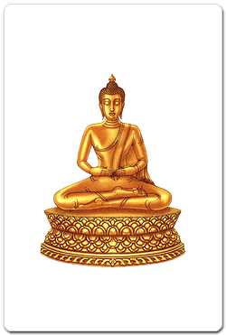พระประจำปีวอก พระพุทธรูปอยู่ในพระอิริยาบทประทับ (นั่ง) ขัดสมาธิ ยกฝ่าพระหัตถ์ทั้งสอง ตะแคงยื่นออกไปข้างหน้า ในสมัยที่พระสัมมาสัมพุทธเจ้าประทับอยู่ที่นครเวสาลี
สุทินกลันทบุตร ได้ฟังพระธรรมเทศนา บังเกิดความเลื่อมใสทูลขอบรรพชาอุปสมบท
แต่บิดามารดาอยากให้สึกมาดูแลสมบัติของตระกูล พระสุทินยังยินดีในพรหมจรรย์
บิดาจึงขอทายาทเพราะหากไม่มีผู้สืบสกุล ทรัพย์สินจะถูกยึดตามธรรมเนียม
พระสุทินจึงได้ร่วมประเวณีกับภรรยาเก่าตามคำขอร้องและได้บุตรชายคนหนึ่ง
ต่อมาท่านรู้สึกไม่สบายใจจึงเล่าให้ภิกษุทั้งหลายทราบ ความทราบถึงพระพุทธองค์
ทรงติเตียนพระสุทิน ที่ทำกรรมที่ไม่สมควรอย่างยิ่งแก่สมณะ จึงบัญญัติสิกขาบทว่า
"ภิกษุเสพเมถุนต้องขาดจากความเป็นภิกษุทันที" นับเป็นปฐมบัญญัติ
คือ ข้อแรกในพระวินัยของพระภิกษุ การประพฤติของพระสุทินสมัยนั้น ถือว่ายังไม่ขาดจากความเป็นภิกษุ
พระพุทธองค์ไม่ทรงเอาผิด เพราะยังมิได้มีสิกขาบทห้ามไว้ แต่ถ้าภิกษุใดทำเช่นนี้อีก
ถือว่าปาราชิก ขาดจากความเป็นภิกษุทันที
|
|
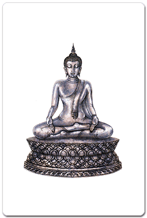พระประจำปีระกา พระพุทธรูปอยู่ในพระอิริยาบทประทับ (นั่ง) ขัดสมาธิ แบฝ่าพระหัตถ์ทั้งสองยื่นออกไปข้างหน้า เป็นกิริยารับถาดมธุปายาส บางแบบอยู่ในพระอิริยาบถประทับ (นั่ง) ห้อยพระบาท เช้าวันเพ็ญวิสาขะ
หรือ วันขึ้น ๑๕ ค่ำ เดือน ๖ ( ปีระกา ) อันเป็นวันครบรอบพระชนมายุ
๓๕ พรรษา ของพระบรมโพธิสัตว์ นางสุชาดา ธิดาของเศรษฐีผู้หนึ่ง แห่งตำบลอุรุเวลาเสนานิคม
ได้นำถาดทองคำบรรจุข้าวมธุปายาส มาแก้บนต่อรุกขเทวดาที่ต้นไทรใหญ่
ครั้นแลเห็นพระบรมโพธิสัตว์ประทับ ณ โคนต้นไทร ทรงรัศมีออกจากพระวรกายแผ่ซ่านไปทั่วปริมณฑล
นางสุชาดาเข้าใจว่าเป็นรุกขเทวดา จึงนำข้าวมธุปายาสไปถวายพร้อมกับถาดทองคำ
พระองค์ทรงแบพระหัตถ์ทั้งสองออกรับถาดข้าวมธุปายาส |
|
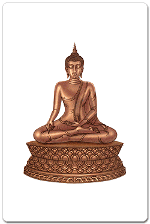พระประจำปีจอ พระพุทธรูปอยู่ในพระอิริยาบทประทับ (นั่ง) ขัดสมาธิ พระหัตถ์ซ้ายวางหงายบนพระเพลา (ตัก) พระหัตถ์ขวาชี้นิ้วออกไปข้างหน้า เป็นกิริยาทรงประกาศอัครสาวก ให้ปรากฏในที่ประชุมสงฆ์ พระอัครสาวก
หมายถึง พระสาวกผู้เลิศ, สาวกผู้ยอดเยี่ยม จำนวน ๒ รูป ได้แก่.-
|
|
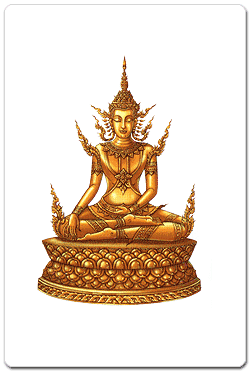พระประจำปีกุน พระพุทธรูปอยู่ในพระอิริยาบทประทับ (นั่ง) ขัดสมาธิ พระหัตถ์ซ้ายวางหงายบนพระเพลา (ตัก) พระหัตถ์ขวาวางคว่ำบนพระชานุ (เข่า) ทรงเครื่องต้นอย่างพระมหากษัตริย์ พญาชมพูบดีผู้มีฤทธิ์เดชมาก มีความริษยาพระเจ้าพิมพิสาร เพราะทรงมีปราสาทงดงามกว่าปราสาทของพระองค์ จึงมารุกรานข่มเหง จนพระเจ้าพิมพิสารต้องหนีไปพึ่งพระบารมีของพระสัมมาสัมพุทธเจ้า พระพุทธองค์ทรงเนรมิตพระองค์เองเป็นพระเจ้าราชาธิราชที่งดงามดุจท้าวมหาพรหม และรับสั่งให้ท้าวสักกเทวราชแปลงเป็นราชทูตไปทูลเชิญพญาชมพูบดีมา พญาชมพูบดีตกตะลึงในความงดงามและความยิ่งใหญ่แห่งพระนครของพระราชาธิราช พระพุทธองค์ทรงให้โอกาสพญาชมพูบดีแสดงอิทธิฤทธิ์
แต่ก็พ่ายต่อพระพุทธองค์ จึงทรงบันดาลให้ทุกสิ่งกลับคืนสู่สภาพเดิมและทรงแสดงธรรมโปรด
จนพญาชมพูบดีเบื่อหน่ายในราชสมบัติอันไม่ยั่งยืน ทูลขออุปสมบท พระพุทธองค์ทรงประทานเอหิภิกขุอุปสัมปทาแก่พญาชมพูบดี |